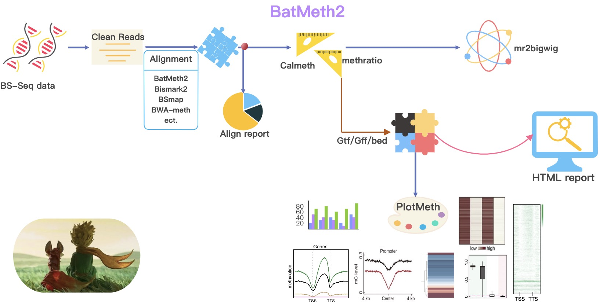

The Basic DNA Methylation (BM) format and BMtools¶
{kind=link}
The Basic DNA methylation (BM) format is a compressed binary indexed DNA methylation format for storing DNA methylation levels with methylation context, strand, coverage, and ID information. Compared with the commonly used file formats for DNA methylation, the storage space of the BM format is reduced by 80%-90%. Besides, based on the BM format file, users can realize fast random access and calculate DNA methylation levels of any chromosome region. Correspondingly, we provided BMtools, a manipulation tool in BM format. The BMtools implements various utilities for post-processing DNA methylation levels with BM format, such as fast and random access, calculation of DNA methylation profile across genes, and differential DNA methylation analysis. Moreover, we also provided a python package pybmtools for processing BM format files.
Installation
Please download and install the tools (see Installation)
The functions you can use BMtools to do:
BMtools: tools for DNA methylation in bm format, and prepare BM simalar bigwig file for browser.
Calculate DNA methylation level: Calulate DNA methylation level (ML) across whole genome output bm format.
DiffMeth: Perform differential analyses with auto defined regions or predefined regions.
PlotMeth: Plot DNA ML profile, heatmap or boxplot across genes/TEs/etc.
pybmtools: A python wrapper for BMtools.
Contents¶
While developing BMtools, we continuously strive to create software that fulfills the following criteria:
new methlation bm format with index can calculate DNA methylation level quickly.
calculate DNA methylation level based on sorted BAM file for single base or chromosome region and genes.
enable customized down-stream analyses, espacially with visulization
generation of highly customizable images (change colours, size, labels, file format, etc.)
Citation¶
Please cite BMtools as follows:
Zhou Q, Lim J-Q, Sung W-K, Li G: An integrated package for bisulfite DNA methylation data analysis with Indel-sensitive mapping. BMC Bioinformatics 2019, 20:47. https://bmcbioinformatics.biomedcentral.com/articles/10.1186/s12859-018-2593-4
Tip
For feature requests or bug reports please open an issue on github.